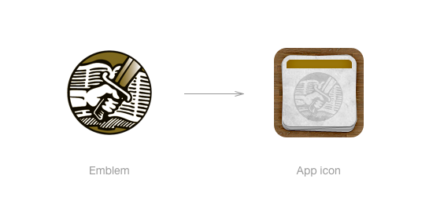

Type: Mobile app; marketing site
Role: Lead designer; web developer
Tasks: UX/UI design, visual design, front-end (web) development, marketing
Me and two others took on designing and building a Rhema card iPhone app. We weren’t sure if it was something others would want, but we did – and we wanted to hone our skills for creating mobile apps.
I started off by brainstorming what the user experience should be, and eventually landed on a digital workflow borrowing heavily from the “card” metaphor. For the UI and visual treatment I probably went overboard with skeuomorphic textures and effects.
I had opinionated preference for how iPhone app icons should look, so I took great care and time in creating the Rhema app icon.

The original Rhema cards had an emblem as part of the masthead that had – along with the colors and typography – become a sort of the brand. I didn’t want to depart too much from this established aesthetic, so I attempted to integrate the emblem into the icon with varying degrees of success across iterations.
I finally landed on an icon that both honored the past, but also looked and felt great on the iPhone’s digital screen.
After we published the app to the App Store (for free) word quickly spread about its existence. Our small team of three was taken aback by its almost-immediate cultural success and relevance – at least in our small circles. It became, as we were told, a must-have homepage app for our church community.
{kind=link}
{kind=link}
{kind=link}
{kind=link}
{kind=link}
{kind=link}